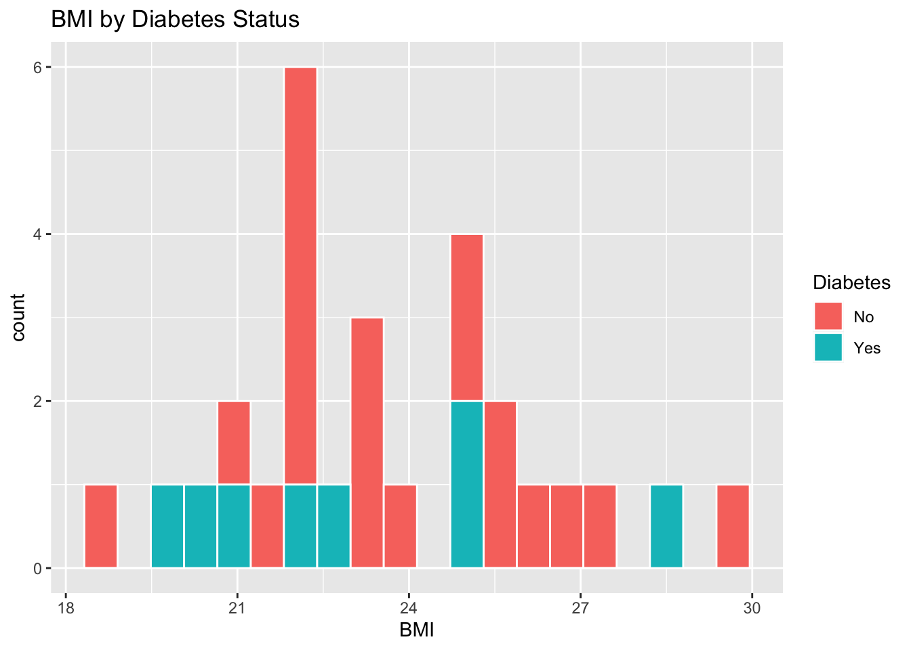
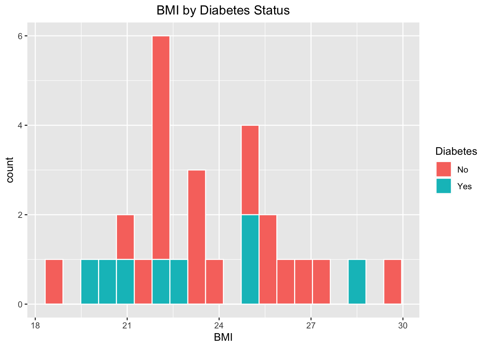
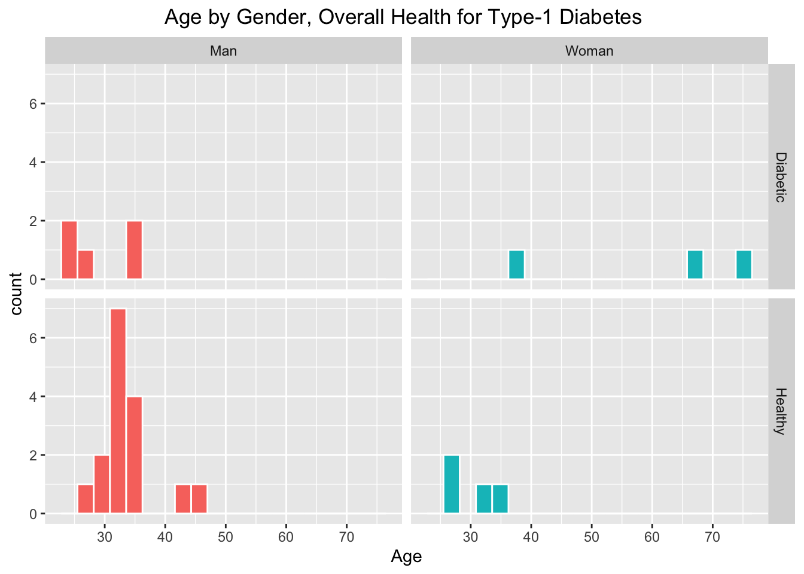
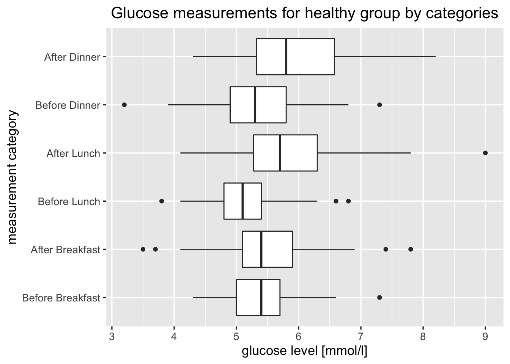

Chapter 5 Results
5.1 Trends in glucose levels
To understand how the glucose measurement values vary before and after each meal, we can look at the boxplot of glucose levels grouped by different categories, in this data set there is a indicator for whether the measurement value is before or after the meal, for the healthy group data set.

We can see that on an average glucose levels tend to be higher in the measurements which are taken 2 hours after each meal, compared to the corresponding values before eating.
As we have glucose measurement every 5 minutes for the diabetes patients data set, let us now look into variation in glucose levels for each of the diabetes patient during the data collection period:

Looking at these distributions of glucose levels for healthy group and diabetes patients, it is usual that glucose levels for people with diabetes tend to be higher than healthy group, due to the fact that in case of type 1 diabetes, pancreas produce little or no insulin and as a result glucose builds up in the bloodstream as there is scarcity of insulin to let glucose into the cells.
We see that patient number 9 tend to have less glucose levels compared to others, so we can infer that patient 9 is more prone to have glucose levels that can trigger hypoglycemia (blood sugar levels drop) events causing danger, as 3.9 mmol/l is the commonly used lower threshold for normal glucose.
5.2 Does changes in glucose level correlate with changes in ECG signals?
Now let us look at glucose level variation with time for patient 9 on a specific day and then compare with other sensor data available, in order to detect patterns or correlations.

We see hypoglycemic events from the above figure i.e when glucose level is less than 3.9 mmol/l. To clearly understand correlations for changes in values, let us look at relative value plots of glucose levels and other measurements collectively.

Looking at the overall plot, we see that changes in glucose level doesn’t correlate well with changes in other measurements here. Now let us at only glucose level and ECG signal data variation with time.

We do see that, when hypoglycemia events occurred, there seems to be sudden fluctuations in the ECG signal. This needs to be explored further considering new data collection in the future, as present data set has less number of hypoglycemic events for the diabetes patients.